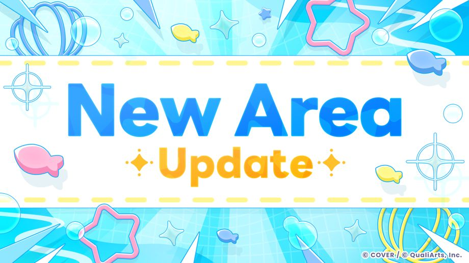
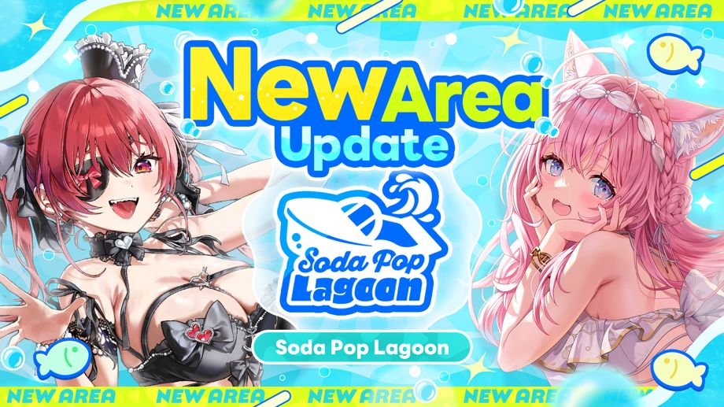

Thank you for using our service.
This is the hololive Dreams management team.
2026-09-29 11:00:00 Updated to Ver.1.2.0.
New Area “Soda Pop Lagoon" is open!

2026-09-29 11:00:00 The new area “Soda Pop Lagoon" is now open!
Soda Pop Lagoon is a new area consisting of a vast ocean and multiple islands.
Also, to accompany the launch of the new area, the new feature “Fishing" and the new Minigame “Splash Ball" have been added.
Go to [Notice] → [Overview] → [New Area "Soda Pop Lagoon" is open!] for more details.
Other updates
Hot Picks

When selecting "Hot Picks" during song selection, the game will automatically choose songs mainly from Event Set Pieces and songs by the talents appearing in the event.
By using this feature instead of a song length bonus, a "Hot Pick Bonus" will be applied. This bonus will be equal to or greater than the song length bonus.
* "Hot Picks" can only be applied in "Grade Mode" and "Private" in Live Together.
◆Improvements to Live & Updates
- Improved the visibility of adjacent Notes.
- Fixed issue that caused Notes to swerve.
- Improved the judgment for short Long Notes.
- We have improved the judgment of the start of long notes under certain conditions.
- We have fixed an issue where under certain conditions the maximum combo count could change.
- You can now filter by "No Obstacles" and "No Multi-Finger" when using filters on Create Charts.
- We have changed the unlock condition for the Chart Info so that Official Charts are unlocked by playing them, while Create Charts are unlocked without any conditions.
- You can now save screenshots from the Live Result and Chart Info screens.
- We have fixed an issue in the song selection screen where the song originally highlighted by the cursor was excluded by filter conditions, and the cursor would return to the top.
- After pausing the Rhythm Game, you can now press the pause button even during the countdown after selecting "Return to Live."
- We have fixed an issue where under certain conditions, Auto Play would not work in "Live Together" even when if "Includes Auto Mode was selected.
◆Live Config Improvements
The following fields have been added to the Live Options used in the rhythm game.
-
"Penlight Color"
You can choose the penlight colors used at events such as hololive fes. -
“Display Scoring"
You can now adjust the configuration to display only judgment timing texts at or below the set judgment level. -
“SLOW/FAST Display Position"
You can set whether SLOW/FAST will appear at the top or bottom. -
“Judgement Position"
You can move the Judgement position up or down in 100-step increments. -
“Judgement Display Type"
You can set whether to fix the judgment display at the center lane or show it at the position corresponding to the lane where the judgment timing was made. -
Alert when Life is low
You can turn this alert effect ON or OFF. -
“SP Skill Timing"
You can choose whether to display on lines as normal or as icons. -
“Lane Width"
You can now adjust the lane width. -
“Lane Divisions"
You can now set the number of dividing lines shown on the lanes. -
“Note Width"
You can now adjust the note width. -
“Note Height"
You can now adjust the note height.
We have also changed the following Live Config options used in the rhythm game.
-
Note display time
The note display time shown in the Live Config has been adjusted so that when the judgment line is above the Hit Line, the time is calculated from when the note appears until it reaches the judgment line.
◆ Create Chart Improvements
- You can no longer set a difficulty level that is significantly lower than the estimated difficulty.
- The zoom level on the create screen can now be set up to a maximum of 100x.
- We have fixed an issue where performance would slow down when editing while using certain charts as a reference.
- We have fixed an issue where long notes and decoration notes would be placed incorrectly when re-editing a saved chart.
◆ Pokajan! Adjustments
We confirmed an issue where players could manipulate their play record by intentionally disconnecting, so we have implemented the following adjustments.
- If you disconnect during a match, the result of that match will still be reflected in your total coins.
Along with these adjustments, we have reset the total coins and rankings in the minigame.
More details in Upcoming Changes to How “Pokajan!” Works.
◆Update to Photo Modes
- Added a button for toggling grid display.
- Adjusted the camera behavior when colliding with obstacles.
◆Improvements to Events & Updates
- After an event has ended, you can view the scheduled date and time for the results announcement from the Event Main menu.
- While the event ranking results are being displayed, you will now not proceed to the next screen unless you tap.
◆Other Updates
- We have adjusted the matching system in Mega Circuit so that it now better reflects players' current play status.
- On the Account Link menu, the user ID is hidden by default, and you can toggle whether to show or hide it.
- It is now possible to report players who are using Secret Mode.
◆Bug Fixes
- Fixed various minor bugs in minigames.
- Fixed various minor bugs.